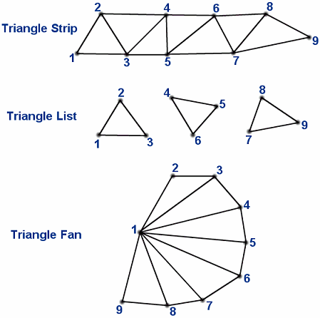

| Available since LÖVE 0.9.0 |
| This enum is not supported in earlier versions. |
How a Mesh's vertices are used when drawing.
If the Mesh has a custom vertex map, then that will determine the order in which the vertices are interpreted by the draw mode.
The vertex map can also be used to make the draw mode reuse vertices, for example if the Mesh has 4 vertices and is using the "triangles" draw mode, the vertex map could be set to {1, 2, 3, 1, 3, 4} to draw 2 triangles using only 4 vertices, effectively drawing a quad using triangles.
